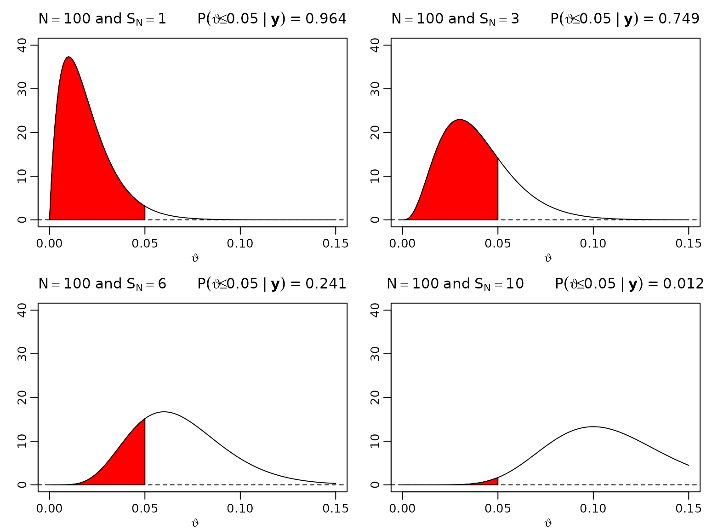
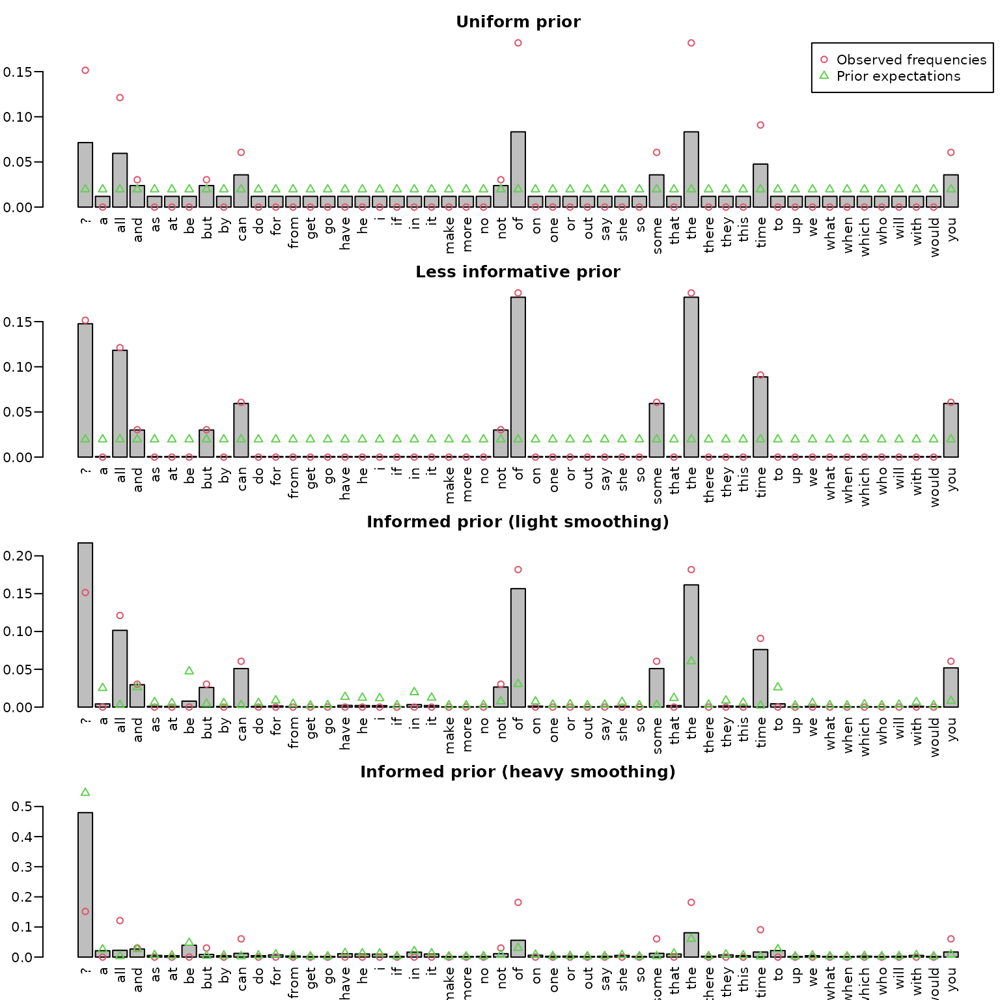

Chapter 3
Chapter03.RmdSection 3.1
Figure 3.1: Posteriors under the beta-binomial model
To reproduce the posteriors in this figure, we simply need to plug in respective counts into the expression for the posterior density and visualize it accordingly.
Table 3.1: Posterior credible intervals under the beta-binomial model
We now proceed to computing credible intervals. Note that R is (generally) vectorized, so we can compute all posterior parameters in one line, without the need for a loop.
gamma <- .95
alpha <- 1 - gamma
Ns <- rep(N, each = length(trueprop))
SNs <- Ns * rep(trueprop, length(N))
aN <- SNs + 1
bN <- Ns - SNs + 1
# Equal-ended 95% credible intervals
leftEE <- qbeta(alpha/2, aN, bN)
rightEE <- qbeta(1 - alpha/2, aN, bN)
# HPDs
resolution <- 10000
grid <- seq(0, 1, length.out = resolution + 1)
dist <- gamma * resolution
leftHPD <- rightHPD <- rep(NA_real_, length(aN))
for (i in seq_along(aN)) {
qs <- qbeta(grid, aN[i], bN[i])
minimizer <- which.min(diff(qs, lag = dist))
leftHPD[i] <- qs[minimizer]
rightHPD[i] <- qs[minimizer + dist]
}
res <- cbind(leftEE, rightEE, leftHPD, rightHPD)All the desired intervals are now stored and can be displayed.
| leftEE | rightEE | leftHPD | rightHPD |
|---|---|---|---|
| 0.0003 | 0.0359 | 0.0000 | 0.0292 |
| 0.0556 | 0.1746 | 0.0515 | 0.1687 |
| 0.4036 | 0.5964 | 0.4036 | 0.5964 |
| 0.0001 | 0.0092 | 0.0000 | 0.0074 |
| 0.0744 | 0.1334 | 0.0732 | 0.1319 |
| 0.4512 | 0.5488 | 0.4512 | 0.5488 |
We can also compare their lengths.
res <- cbind(lengthEE = rightEE - leftEE, lengthHPD = rightHPD - leftHPD)
knitr::kable(round(res, 4))| lengthEE | lengthHPD |
|---|---|
| 0.0356 | 0.0292 |
| 0.1189 | 0.1172 |
| 0.1927 | 0.1927 |
| 0.0091 | 0.0074 |
| 0.0590 | 0.0587 |
| 0.0976 | 0.0976 |
Figure 3.2: One-sided hypthesis testing
We now move forward to assessing visualizing the posterior probability of (the proportion of defective items) being less than for and .
theta <- seq(0, .15, .001)
N <- 100
SN <- c(1, 3, 6, 10)
aN <- SN + 1
bN <- N - SN + 1
for (i in seq_along(SN)) {
plot(theta, dbeta(theta, aN[i], bN[i]), type = "l", ylim = c(0, 40),
xlab = expression(vartheta), ylab = "",
main = bquote(N == 100 ~ "and" ~ S[N] == .(SN[i]) ~ " " ~
P(vartheta <= 0.05 ~ "|" ~ bold(y)) ~ "=" ~
.(round(pbeta(0.05, aN[i], bN[i]), 3))))
abline(h = 0, lty = 2)
polygon(c(theta[theta <= 0.05], 0.05),
c(dbeta(theta[theta <= 0.05], aN[i], bN[i]), 0), col = "red")
}
Example 3.4: Bag of Words
Preparing the Data
After reading in the quote, we do some simple manipulation such as converting to lower case, getting rid of newlines, and splitting the string into individual words. Finally, we remove potential empty words and display the resulting frequencies.
string <- "You can fool some of the people all of the time,
and all of the people some of the time,
but you can not fool all of the people all of the time."
tmp <- tolower(string) ## convert to lower case
tmp <- gsub("\n", " ", tmp) ## replace newlines with spaces
tmp <- unlist(strsplit(tmp, " |,|\\.")) ## split at spaces, commas, or stops
dat <- tmp[tmp != ""] ## remove empty words
tab <- table(dat)
knitr::kable(t(tab))| all | and | but | can | fool | not | of | people | some | the | time | you |
|---|---|---|---|---|---|---|---|---|---|---|---|
| 4 | 1 | 1 | 2 | 2 | 1 | 6 | 3 | 2 | 6 | 3 | 2 |
To define our universe of possible words, we first look at the words dataset (shipped with this package). It contains 1000 most common English words, alongside their frequency of usage among a total of 100 million occurrences (cf. https://www.eapfoundation.com/vocab/general/bnccoca/).
library(BayesianLearningCode)
head(words)
#> word frequency
#> 1 a 2525253
#> 2 able 47760
#> 3 about 192168
#> 4 above 25370
#> 5 absolute 9284
#> 6 accept 29026For illustration purposes, we only use the top 50 words and augmented those with a question mark for all other words. This leaves us with 51 possible outcomes (our universe).
top50 <- tail(words[order(words$frequency),], 50)
universe <- c("?", sort(top50$word))
freq <- c(10^8 - sum(top50$frequency), top50$frequency[order(top50$word)])
universe
#> [1] "?" "a" "all" "and" "as" "at" "be" "but" "by"
#> [10] "can" "do" "for" "from" "get" "go" "have" "he" "i"
#> [19] "if" "in" "it" "make" "more" "no" "not" "of" "on"
#> [28] "one" "or" "out" "say" "she" "so" "some" "that" "the"
#> [37] "there" "they" "this" "time" "to" "up" "we" "what" "when"
#> [46] "which" "who" "will" "with" "would" "you"Now, we check if there are any words in our data set which are not included in our universe (here, only fool and people) and replace these with a question mark.
| ? | all | and | but | can | not | of | some | the | time | you |
|---|---|---|---|---|---|---|---|---|---|---|
| 5 | 4 | 1 | 1 | 2 | 1 | 6 | 2 | 6 | 3 | 2 |
Computing the Posterior Under the Uniform Prior
Under a uniform prior (i.e., all 51 elements of our universe receive one pseudo-count), the posterior mean for each word occurrence probability is given by where stands for the number of data occurrences of the th word in the universe, and is the sum of all s. This can be very easily implemented by merging the universe and the data, and simply counting the resulting frequencies.
Computing the Posterior Under a Less Informative Prior
Note that the above strategy implicitly assumes that we have exactly 51 pseudo-observations. To render the prior less influential, we can rescale it to, e.g., 1 pseudo-observation. Then, the posterior expectation is To compute this expectation we simply add counts and the new pseudo-counts .
K <- length(universe)
N0 <- 1
gamma0 <- rep(N0 / K, length(universe))
post_lessinformative_unnormalized <- gamma0 + counts
post_lessinformative <-
post_lessinformative_unnormalized / sum(post_lessinformative_unnormalized)Alternatively, we could use a loop.
post_lessinformative_unnormalized2 <- rep(NA_real_, length(universe))
for (i in seq_along(universe)) {
Nk <- sum(dat == universe[i])
post_lessinformative_unnormalized2[i] <- gamma0[i] + Nk
}
post_lessinformative2 <-
post_lessinformative_unnormalized2 / sum(post_lessinformative_unnormalized2)The results must be numerically equivalent, and we can verify this easily.
Summing up what we have so far.
dirichlet_sd = function(gamma) {
mean <- gamma / sum(gamma)
sd <- sqrt((mean * (1 - mean)) / (sum(gamma) + 1))
sd
}
resfull <- cbind(prior_mean = rep(1/K, K),
prior_sd_uniform = dirichlet_sd(rep(1, K)),
prior_sd_lessinformative = dirichlet_sd(rep(1/K, K)),
rel_freq = counts / sum(counts),
posterior_mean_uniform = post_uniform,
posterior_sd_uniform = dirichlet_sd(post_uniform),
posterior_mean_lessinformative = post_lessinformative,
posterior_sd_lessinformative = dirichlet_sd(post_lessinformative))
unseen <- counts == 0L
res <- rbind(resfull[!unseen,], UNSEEN = resfull[which(unseen)[1],])
knitr::kable(t(round(res, 4)))| ? | all | and | but | can | not | of | some | the | time | you | UNSEEN | |
|---|---|---|---|---|---|---|---|---|---|---|---|---|
| prior_mean | 0.0196 | 0.0196 | 0.0196 | 0.0196 | 0.0196 | 0.0196 | 0.0196 | 0.0196 | 0.0196 | 0.0196 | 0.0196 | 0.0196 |
| prior_sd_uniform | 0.0192 | 0.0192 | 0.0192 | 0.0192 | 0.0192 | 0.0192 | 0.0192 | 0.0192 | 0.0192 | 0.0192 | 0.0192 | 0.0192 |
| prior_sd_lessinformative | 0.0980 | 0.0980 | 0.0980 | 0.0980 | 0.0980 | 0.0980 | 0.0980 | 0.0980 | 0.0980 | 0.0980 | 0.0980 | 0.0980 |
| rel_freq | 0.1515 | 0.1212 | 0.0303 | 0.0303 | 0.0606 | 0.0303 | 0.1818 | 0.0606 | 0.1818 | 0.0909 | 0.0606 | 0.0000 |
| posterior_mean_uniform | 0.0714 | 0.0595 | 0.0238 | 0.0238 | 0.0357 | 0.0238 | 0.0833 | 0.0357 | 0.0833 | 0.0476 | 0.0357 | 0.0119 |
| posterior_sd_uniform | 0.1821 | 0.1673 | 0.1078 | 0.1078 | 0.1312 | 0.1078 | 0.1954 | 0.1312 | 0.1954 | 0.1506 | 0.1312 | 0.0767 |
| posterior_mean_lessinformative | 0.1476 | 0.1182 | 0.0300 | 0.0300 | 0.0594 | 0.0300 | 0.1770 | 0.0594 | 0.1770 | 0.0888 | 0.0594 | 0.0006 |
| posterior_sd_lessinformative | 0.2508 | 0.2283 | 0.1206 | 0.1206 | 0.1671 | 0.1206 | 0.2699 | 0.1671 | 0.2699 | 0.2012 | 0.1671 | 0.0170 |
Computing the Posterior Under an Informed Prior
One might consider using yet another prior (which we label informed). For instance, we might want to fix the total number of pseudo-counts to, say, one fifth of the number of observations (this implies a data to prior ratio of 5 to 1). Each word in the universe is then weighted according to its frequency of appearance in the English language. Remember that the prior probability for a word outside of the top 50 English words is (the total number of words in the corpus) minus the sum of the top 50 counts. To compute the posterior, we can again add the actual counts and the new pseudo-counts.
N <- length(dat)
N0 <- N/5
gamma0 <- N0 * freq / 10^8
post_informed_unnormalized <- gamma0 + counts
post_informed <- post_informed_unnormalized / sum(post_informed_unnormalized)Alternatively, we might want to prefer heavier shrinkage with respect to the base rate (here, the overall word distribution in the English language). This can simply be accomplished by increasing the total number of pseudo-counts .
N0 <- 5*N
gamma0 <- N0 * freq / 10^8
post_informed_unnormalized2 <- counts + gamma0
post_informed2 <- post_informed_unnormalized2 / sum(post_informed_unnormalized2)Visualizing the Results
To display the results, we use simple bar plots. For didactic purposes, we also add the prior probabilities of each word via green circles.
midpts <- barplot(post_uniform, las = 2,
ylim = c(0, max(counts/N, post_uniform)))
points(midpts, counts/N, col = 2, pch = 1)
points(midpts, rep(1/51, length(midpts)), col = 3, pch = 2)
title("Uniform prior")
legend("topright", c("Observed frequencies", "Prior expectations"),
col = 2:3, pch = 1:2)
midpts <- barplot(post_lessinformative, las = 2,
ylim = c(0, max(counts/N, post_lessinformative)))
points(midpts, counts/N, col = 2, pch = 1)
points(midpts, rep(1/51, length(midpts)), col = 3, pch = 2)
title("Less informative prior")
midpts <- barplot(post_informed, las = 2,
ylim = c(0, max(counts/N, post_informed, freq/10^8)))
points(midpts, counts/N, col = 2, pch = 1)
points(midpts, freq / 10^8, col = 3, pch = 2)
title("Informed prior (light shrinkage)")
midpts <- barplot(post_informed2, las = 2,
ylim = c(0, max(counts/N, post_informed2, freq/10^8)))
points(midpts, counts/N, col = 2, pch = 1)
points(midpts, freq /10^8, col = 3, pch = 2)
title("Informed prior (heavy shrinkage)")
In the top panel (based on the uniform prior), we can nicely see the add-one smoothing effect, whereas the second panel shows almost no smoothing, and unseen words are estimated to be extremely unlikely. The two bottom panels show the posteriors under the informed priors, one with with light and one heavy shrinkage.